学习目标
理解Linux系统中进程调度的时机，可以在内核代码中搜索schedule()函数，看都是哪里调用了schedule()
使用gdb跟踪分析一个schedule()函数 ，验证您对Linux系统进程调度与进程切换过程的理解
特别关注并仔细分析switch_to中的汇编代码，理解进程上下文的切换机制，以及与中断上下文切换的关系；
基础知识
异常
系统必须能对系统状态的变化做出反应，现代系统通过使控制流发生突变对这些情况做出反应。我们称这种突变为异常控制流( Exceptional Control Flow,ECF)异常控制流发生在系统的各个层次。
异常是异常控制流的一种，一部分由硬件实现，一部分由操作系统实现。异常(exception)就是控制流的突变，用来响应处理器状态的某些变化。在处理器中，状态被编码成不同的位和信号。状态变化称为事件（event）。在任何情况下，当处理器检测到有事件发生时，它就会通过一张叫做异常表（exception table）的跳转表，进行一个间接过程调用（异常）到一个专门设计用来处理这类事件的操作系统子程序（异常处理程序(exception handler)）。
异常处理
系统中可能的每种类型的异常，都为分配了一个非负的异常号(exception number)。包括：被零除、缺页、存储器访问违例、断点、算术溢出，系统调用、外都I/O设备的信号。
在任何情况下，当处理器检测到有事件发生时，处理器会执行间接过程调用：
- 在跳转至异常处理程序之前，处理器将返回地址和一些额外的处理器状态压入栈中；
- 根据异常号 k， 通过异常表，转到相应的异常处理程序；
- 执行“从中断返回”的指令，可选的返回到被中断的程序，将状态弹回到处理器的控制和数据寄存器中。
异常的类别
异常可以分为四类： 中断（interrupt）、陷阱（trap）、故障（fault）和终止（abort）。其中，中断是异步的。 I/O 设备向处理器芯片上的一个引脚发信号，并将异常号放到系统总线上，触发中断。在当前指令执行完成之后，处理器检测到中断引脚的电压变高了，就从系统总线读取异常号，然后执行间接过程调用。当处理程序返回时，将控制返回给下一条指令。而陷阱、故障和终止都是同步的。
中断是异步发生的，硬件中断不由任何指令造成，所以说是异步的。硬件中断的异常处理程序称为中断处理程序。
陷阱是有意的异常，陷阱最重要的用途是在用户程序和内核之间提供系统调用。用户程序执行“syscal n”指令，请求服务 n，syscall 指令触发陷阱。异常处理程序对参数解码，并调用适当的内核程序。系统调用运行在内核模式中。经典的示例是读文件、创建新的进程、加载一个新的程序和终止当前进程
故障是由错误情况引起的，它可能能够被故障处理程序修正。当故障发生时，处理器将控制转移给故障处理程序。如果故障处理程序能够修正这个错误情况，就将控制返回给当前指令，否则，返回到内核的 abort 例程。一个经典的故障示例是缺页异常。
终止是不可恢复的致命错误造成的结果，通常是一些硬件错误，如 DRAM 和 SRAM 位被损坏时发生的奇偶错误。终止处理程序将控制返回给一个 abort 例程，终止应用程序。
Linux/IA32 系统中的异常
在 IA32 系统上，系统调用是通过一条称为 int n 的陷阱指令来完成的，其中 n 可能是异常表 256 个条目中的任何一个。在历史上，系统调用是通过异常 128（0x80）。
进程
进程是一个执行中程序的实例。系统中每个程序都是运行在某个进程的上下文(context)中的。上下文由程序正确运行所需的状态组成，包括程序的存放在存储器中的代码和数据、栈、通用目的寄存器的内容、程序计数器、环境变量和打开文件描述符的集合。
每次用户在shell中输入一个可执行目标文件的名字，并运行程序时，shell会创建一个新的进程，然后在新进程的上下文中运行可执行目标文件。
进程给应用程序提供了两个关键抽象：
- 一个独立的逻辑控制流，提供程序独占处理器的假象。
- 一个私有的地址空间，提供程序独占存储器系统的假象。
逻辑控制流
程序执行的一系列PC（程序计数器）值唯一地对应于包含在程序的可执行目标文件中的指令或包含在运行时动态链接的共享库中的指令，这个PC值的序列称为逻辑控制流。
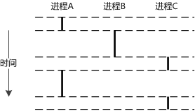进程轮流使用处理器，每个进程执行它的流的一部分，然后被抢占，其他进程开始执行。程序运行在进程的上下文中，因此像是在独占地使用处理器。
逻辑流是相互独立的，进程互不影响。可以通过进程间通信（IPC）机制来实现进程间交互。
逻辑流在时间上和其他逻辑流重叠的进程称为并发进程，这两个进程称为并发运行。如A和B、A和C，而B和C不是并发运行的。
进程执行控制流的一部分的时间段称为时间片，进程和其他进程轮换运行称为多任务，也称时间分片。
私有地址空间
进程为每个程序提供私有地址空间，和这个空间中某地址相关联的存储器字节不能被其他进程读写。和私有地址空间关联的存储器内容一般不同，但空间有相同的结构。
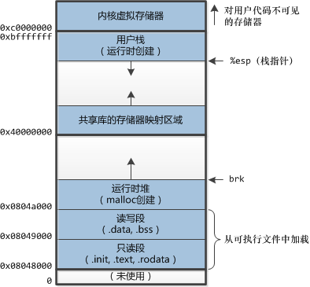地址空间的顶部是保留给内核的，包含内核在代表进程执行指令时（比如：系统调用）使用的代码数据和栈。
用户模式和内核模式
处理器需要提供一种机制，限制一个应用可以执行的指令以及可访问的地址空间范围来实现进程抽象，处理器通常是用某个控制寄存器的一个模式位（mode bit）来提供这种机制，该寄存器描述了进程当前享有的特权。设置了模式位时，进程运行在内核模式中，进程可以执行任何指令和访问任何存储器位置。没设置模式位时，进程运行在用户模式中，进程不允许执行特权指令（privileged instruction）和访问地址空间中内核区内的代码和数据。用户程序必须通过系统调用接口间接地访问内核代码和数据。
运行应用程序代码的进程初始是在用户模式中的，进程从用户模式变为内核模式的唯一方法是通过中断、故障或陷入系统调用这样的异常。
Linux有一种 /proc 文件系统，它运行用户模式进程访问内核数据结构的内容。/proc文件系统将许多内核数据结构的内容输出为一个用户可以读的文件文本的层次结构。比如：系统属性、cpu类型、系统总线和设备信息。
处理器总处于以下状态中的一种：
１、内核态，运行于进程上下文，内核代表进程运行于内核空间；
２、内核态，运行于中断上下文，内核代表硬件运行于内核空间；
３、用户态，运行于用户空间。
上下文切换
操作系统内核使用一种称为上下文切换（context switch）的较高层形式的异常控制流来实现多任务。上下文切换机制建立在低级异常机制上。
内核为每个进程维持一个上下文，上下文就是内核重新启动一个被抢占进程所需的状态。包括通用目的寄存器、浮点寄存器、程序计数器、用户栈、状态寄存器、内核栈和各种内核数据结构（页表、进程表和文件表等）的值。进程上下文包含了进程执行需要的所有信息，包括: 1、用户地址空间：包括程序代码，数据，用户堆栈等；2、控制信息：进程描述符，内核堆栈等；3、硬件上下文（注意中断也要保存硬件上下文只是保存的方法不同）可以看作就是硬件传递过来的这些参数和内核需要保存的一些其他环境。
通过系统调用，用户空间的应用程序就会进入内核空间，由内核代表该进程运行于内核空间，这就涉及到上下文的切换，用户空间和内核空间具有不同的地址映射，通用或专用的寄存器组，而用户空间的进程要传递很多变量、参数给内核，内核也要保存用户进程的一些寄存器、变量等，以便系统调用结束后回到用户空间继续执行。
所谓的进程上下文，就是一个进程在执行的时候，CPU的所有寄存器中的值、进程的状态以及堆栈中的内容，当内核需要切换到另一个进程时，它需要保存当前进程的所有状态，即保存当前进程的进程上下文，以便再次执行该进程时，能够恢复切换时的状态，继续执行。
同理，硬件通过触发信号，导致内核调用中断处理程序，进入内核空间。这个过程中，硬件的一些变量和参数也要传递给内核，内核通过这些参数进行中断处理，中断上下文就可以理解为硬件传递过来的这些参数和内核需要保存的一些环境，主要是被中断的进程的环境。中断上下文不是一个进程，它并不存在task_struct，所以它是不可调度的。所以，在中断上下文就不能睡眠。
两者的区别在于，进程上下文与当前执行进程密切相关，而中断上下文在逻辑上与进程没有关系。进程上下文主要是异常处理程序和内核线程。内核之所以进入进程上下文是因为进程自身的一些工作需要在内核中做。例如，系统调用是为当前进程服务的，异常通常是处理进程导致的错误状态等。所以在进程上下文中引用current是有意义的。内核进入中断上下文是因为中断信号而导致的中断处理或软中断。而中断信号的发生是随机的，中断处理程序及软中断并不能事先预测发生中断时当前运行的是哪个进程，所以在中断上下文中引用current是可以的，但没有意义。事实上，对于A进程希望等待的中断信号，可能在B进程执行期间发生。例如，A进程启动写磁盘操作，A进程睡眠后现在时B进程在运行，当磁盘写完后磁盘中断信号打断的是B进程，在中断处理时会唤醒A进程。
当进程执行的某些时刻，内核可以决定抢占当前进程，并重新开始一个先前被抢占的进程，这称为调度（schedule），由内核中的调度器代码处理。当内核选择一个新的进程运行时，我们称内核调度了这个进程。内核使用上下文切换机制来将控制转移到新进程。上下文切换保存当前进程的上下文，恢复先前被抢占进程保存的上下文，将控制传递给新恢复的进程。
系统调用和中断可以引发上下文切换。
挂起正在CPU上执行的进程，与中断时保存现场是不同的，中断前后是在同一个进程上下文中，只是由用户态转向内核态执行。
系统调用
在Linux中，可以使用 man syscalls 查看全部系统调用的列表。系统级函数遇到错误时，通常返回-1，并设置全局变量 errno 。
strace 命令可以打印程序和它的子进程调用的每个系统调用的轨迹。
调度触发的时机
Linux 调度器将进程分为三类：
首先是交互式进程，此类进程有大量的人机交互，因此进程不断地处于睡眠状态，等待用户输入。典型的应用比如编辑器 vi。此类进程对系统响应时间要求比较高，否则用户会感觉系统反应迟缓。
第二种就是批处理任务，此类进程不需要人机交互，在后台运行，需要占用大量的系统资源。但是能够忍受响应延迟。比如编译器。
最后一种就是实时进程实时对调度延迟的要求最高，这些进程往往执行非常重要的操作，要求立即响应并执行。比如视频播放软件或飞机飞行控制系统，很明显这类程序不能容忍长时间的调度延迟，轻则影响电影放映效果，重则机毁人亡。
根据进程的不同分类 Linux 采用不同的调度策略。对于实时进程，采用 FIFO 或者 Round Robin 的调度策略。对于普通进程，则需要区分交互式和批处理式的不同。传统 Linux 调度器提高交互式应用的优先级，使得它们能更快地被调度。而 CFS 和 RSDL 等新的调度器的核心思想“完全公平”。
调度的触发主要有如下几种情况：
1、当前进程（正在CPU上运行的进程）状态变为非可执行状态。
进程执行系统调用主动变为非可执行状态。比如执行nanosleep进入睡眠、执行exit退出、等等；
进程请求的资源得不到满足而被迫进入睡眠状态。比如执行read系统调用时，磁盘高速缓存里没有所需要的数据，从而睡眠等待磁盘IO；
进程响应信号而变为非可执行状态。比如响应SIGSTOP进入暂停状态、响应SIGKILL退出、等等；
2、抢占。进程运行时，非预期地被剥夺CPU的使用权。这又分两种情况：进程用完了时间片、或出现了优先级更高的进程。
优先级更高的进程受正在CPU上运行的进程的影响而被唤醒。如发送信号主动唤醒，或因为释放互斥对象（如释放锁）而被唤醒；
内核在响应时钟中断的过程中，发现当前进程的时间片用完；
内核在响应中断的过程中，发现优先级更高的进程所等待的外部资源的变为可用，从而将其唤醒。比如CPU收到网卡中断，内核处理该中断，发现某个socket可读，于是唤醒正在等待读这个socket的进程；再比如内核在处理时钟中断的过程中，触发了定时器，从而唤醒对应的正在nanosleep系统调用中睡眠的进程；
内核抢占基础知识
- 内核抢占概念:
当进程位于内核空间，有一个更高优先级的任务出现时，如果该内核支持抢占的话，则可以将当前任务挂起，执行更高优先级的任务！ - 用户抢占的概念:
内核即将返回用户空间的时候，如果need resched标志被设置，会导致schedule()被调用，此时就会发生用户抢占。内核无论是在从中断处理程序还是在系统调用后返回，都会检查need resched标志。如果它被设置了，那么，内核会选择一个其他(更合适的)进程投入运行。 - 内核抢占好处:
这是实时系统所要求的。试想一下，如果硬件中断开启了一个实时进程，如果内核不支持抢占的话，被开启的实时进程就要等到当前进程执行完毕才能被调度，这就带来了延时，对实时性不好！如果内核支持抢占的话，就可以将当前进程挂起，来执行实时进程，这样对实时性有利！ - 什么情况下不能抢占内核:
（1）内核正进行中断处理
（2）内核正在进行中断上下文的Bottom Half(中断的底半部)处理
（3）内核的代码段正持有spinlock自旋锁、writelock/readlock读写锁等锁，处干这些锁的保护状态中。
（4）内核正在执行调度程序Scheduler，这种情况正对应我们的schedule函数分析！！！
（5）内核正在对每个CPU“私有”的数据结构操作
为保证Linux内核在以上情况下不会被抢占，抢占式内核使用了一个变量preempt_count，称为内核抢占锁。这一变量被设置在进程的PCB结构task_struct中。每当内核要进入以上几种状态时，变量preempt_ count就加1，指示内核不允许抢占。每当内核从以上几种状态退出时，变量preempt_ count就减1，同时进行可抢占的判断与调度。
Linux操作系统架构和系统执行过程概览
这部分内容出自老师课件
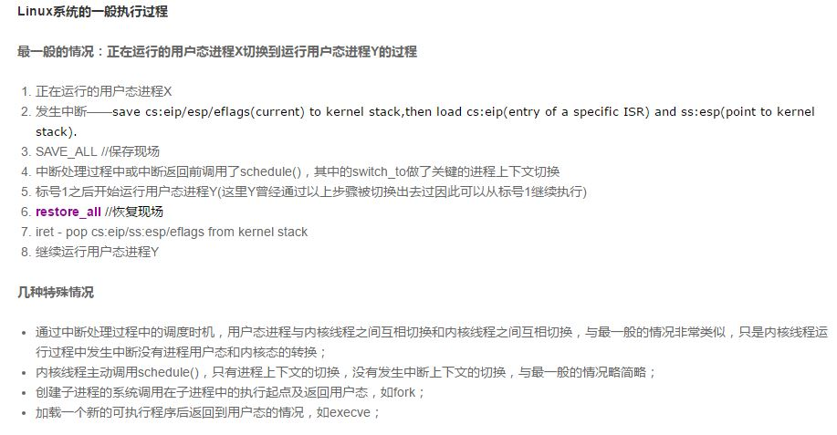 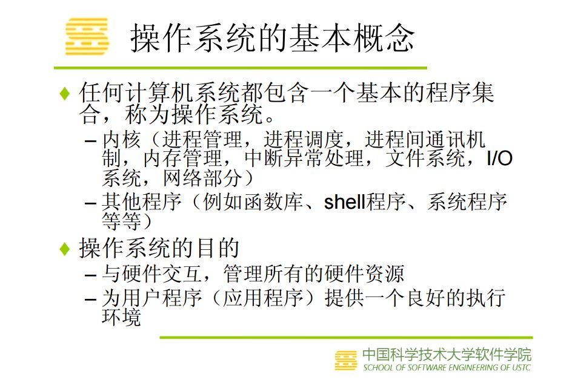 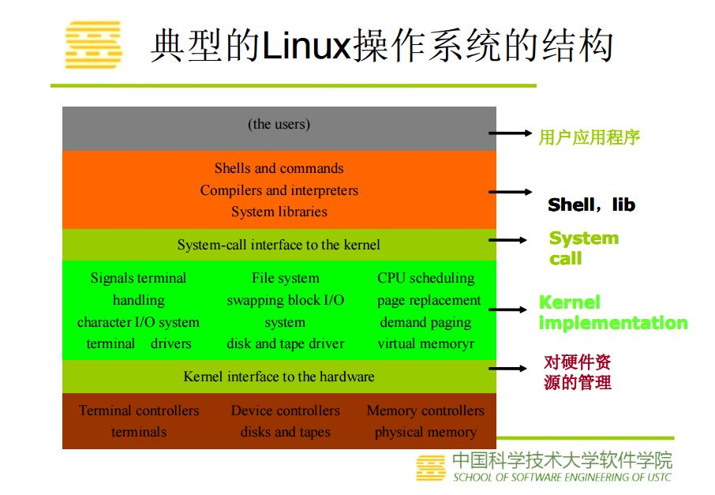 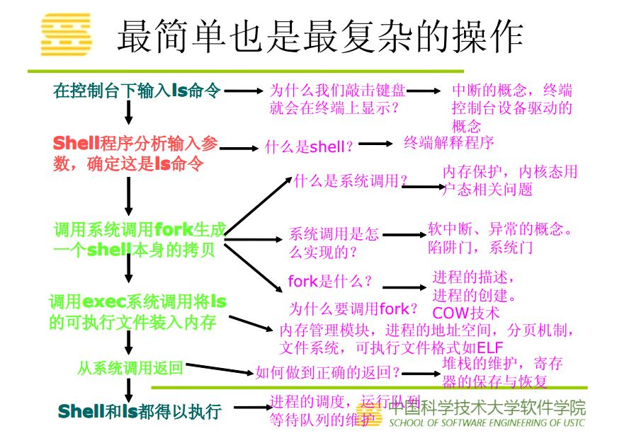 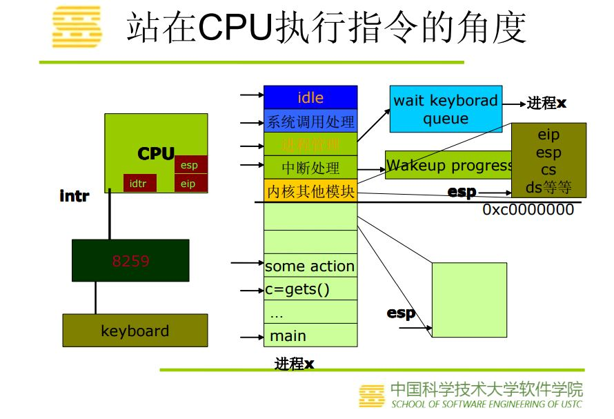 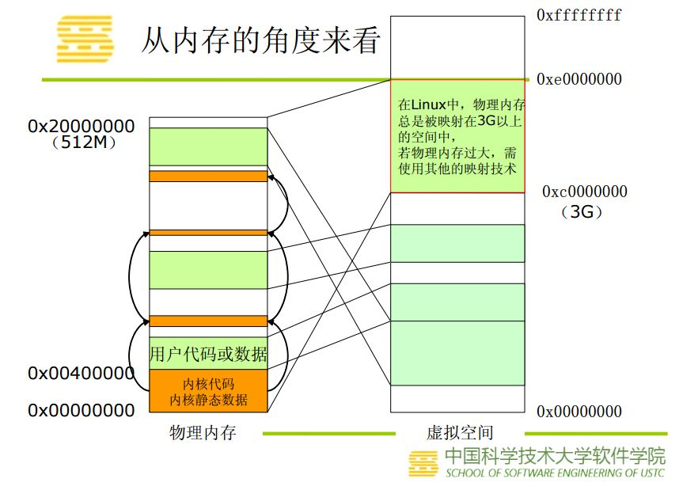实验部分
实验步骤
schedule()函数选择一个新的进程来运行，并调用context_switch进行上下文的切换，宏调用switch_to来进行关键上下文切换。__switch_to()主要完成硬件上下文切换，switch_to主要完成内核堆栈切换。
next = pick_next_task(rq, prev);//进程调度算法都封装这个函数内部
context_switch(rq, prev, next);//进程上下文切换
switch_to利用了prev和next两个参数：prev指向当前进程，next指向被调度的进程。使得当前进程的内核堆栈切换为下一个要执行进程的内核堆栈；然后切换到下一个进程的EIP。
switch_to时请注意：这是一个宏，不是函数，它的参数prev, next, last不是值拷贝，而是它的调用者context_switch()的局部变量。局部变量是通过%ebp寄存器来索引的。关于__switch_to()这个函数的调用，并不是通过普通的call来实现，而是直接jmp，函数参数也并不是通过堆栈来传递，而是通过寄存器来传递。
switch_to切换主要有以下三部分：
|
进程切换 |
即esp的切换 |
由于从esp可以找到进程的描述符 |
|
硬件上下文切换 |
_switch_to() |
以前通过x86硬件支持，现在使用软件切换 |
|
堆栈的切换 |
即ebp的切换 |
ebp是栈底指针，它确定了当前变量空间属于哪个进程 |
schedule函数的特殊之处就在于，它的代码看上去分成两部分，上部分当前进程执行，下部分切换后的进程执行。看似不合理，原理就是对于一个进程来说，它仍然是执行完整的schedule，只不过它执行上半部分之后等下个进程执行下半部分切换回来之后，在执行自己的下半部分。
-----------------------------------------------我是分割线------------------------------------------------------
在schedule函数设置断点
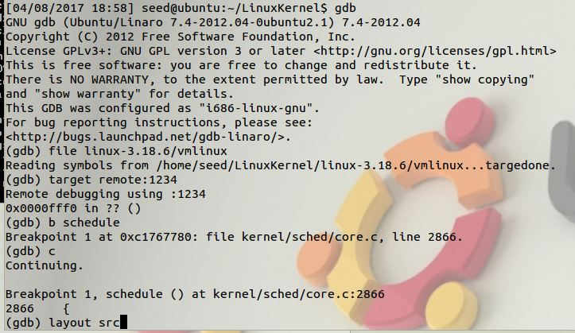运行到断点
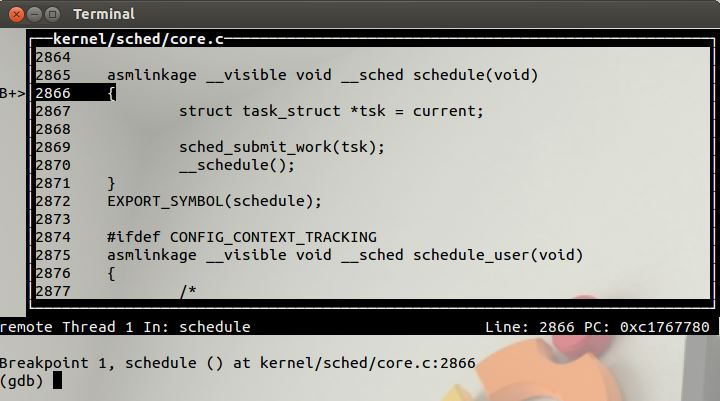给tsk赋值之后，查看tsk的内容。task_struct是进程描述符，实验6中有详细介绍。。
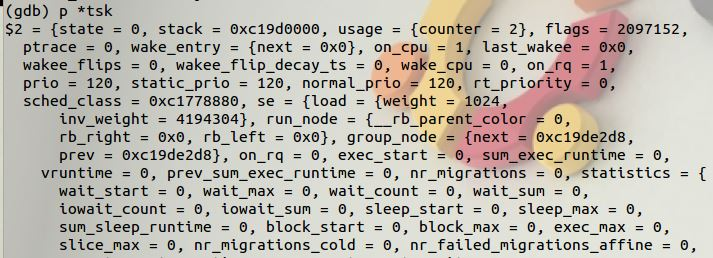设置断点__schedule并运行到这里
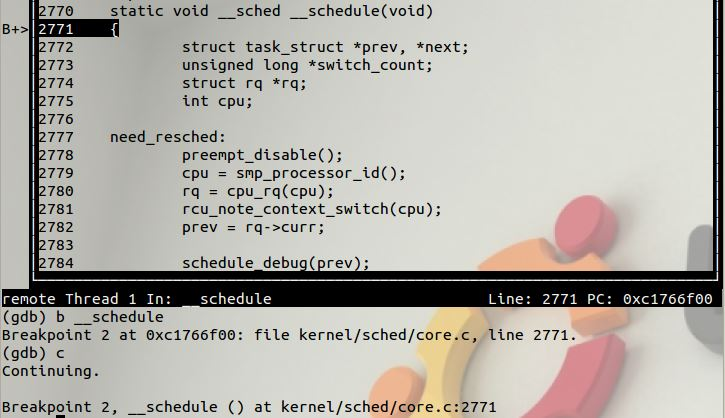__schedule调用了context_switch。
但无论是b context_switch,还是b kernel/sched/core.c:2834都无法调试到这个调用这里停下来。
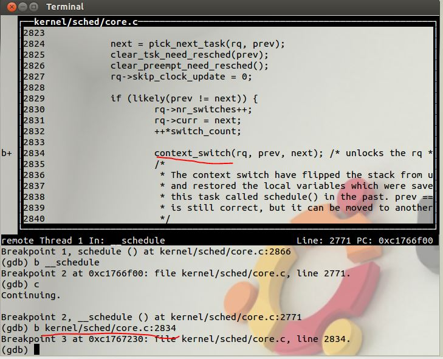无奈之下，重启调试，再context_switch定义处设置断点，万幸这次在这里停下了。
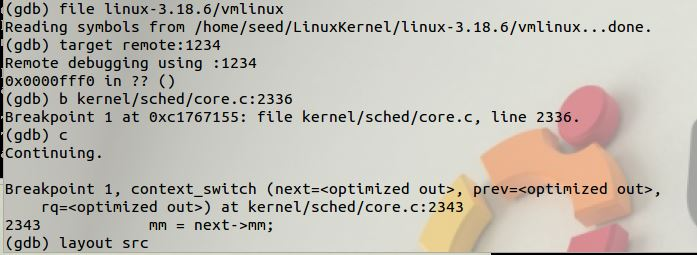 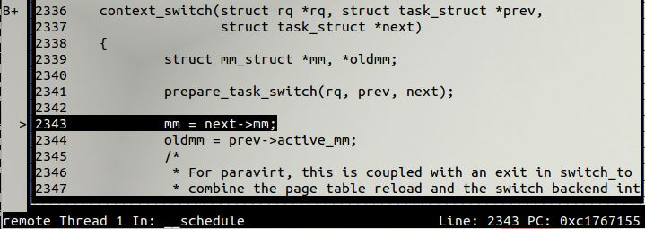context_switch调用了switch_to，在这里加个断点。
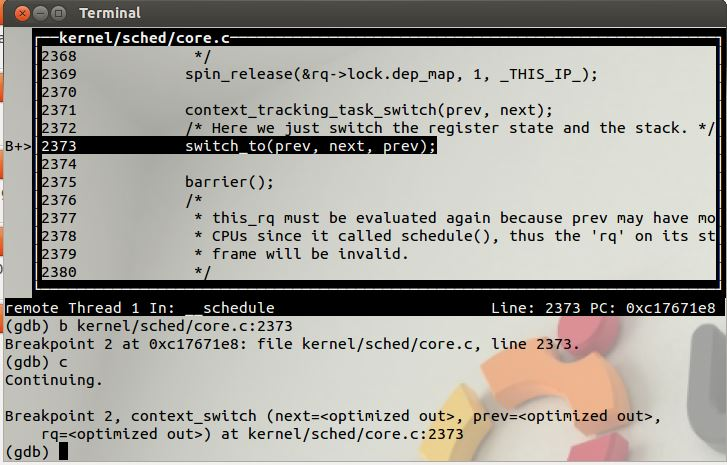停下的地方却是__switch_to函数。加断点b switch_to无效，我在switch_to的定义处设置断点也就是arch/x86/include/asm/switch_to.h:31这里加断点也调试不到这里。后来想明白了，switch_to是个宏定义，在预处理阶段就把宏定义命令转换了，当然调试不到。
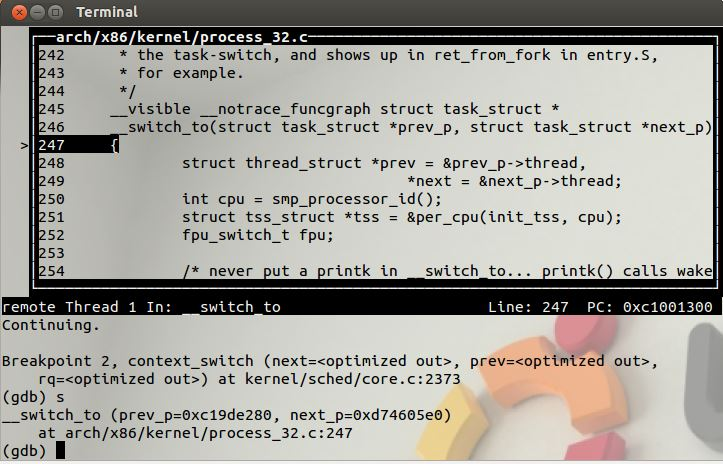代码分析
/kernel/sched/core.c:schedule
asmlinkage __visible void __sched schedule(void)
{
struct task_struct *tsk = current;//来获取当前进程
sched_submit_work(tsk);//避免死锁
__schedule();//处理切换过程
}
/kernel/sched/core.c:__schedule
static void __sched __schedule(void)
{
struct task_struct *prev, *next;
unsigned long *switch_count;
struct rq *rq;
int cpu;
need_resched:
preempt_disable(); //关闭内核抢占
cpu = smp_processor_id();
rq = cpu_rq(cpu); //找到当前cpu上的就绪队列rq，跟当前进程相关的runqueue的信息被保存在rq中
rcu_note_context_switch(cpu);
prev = rq->curr; //将正在运行的进程curr保存到prev中
schedule_debug(prev);//如果禁止内核抢占，而又调用了cond_resched就会出错，这里就是用来捕获该错误的
if (sched_feat(HRTICK))
hrtick_clear(rq);
smp_mb__before_spinlock();
raw_spin_lock_irq(&rq->lock);
switch_count = &prev->nivcsw;//切换次数记录, 默认认为非主动调度计数
if (prev->state && !(preempt_count() & PREEMPT_ACTIVE))//如果内核态没有被抢占，并且内核抢占有效
{
//如果当前进程有非阻塞等待信号，并且它的状态是TASK_INTERRUPTIBLE
if (unlikely(signal_pending_state(prev->state, prev)))
{
prev->state = TASK_RUNNING; //将当前进程的状态设为：TASK_RUNNING
}
else
{
deactivate_task(rq, prev, DEQUEUE_SLEEP);//将当前进程从runqueue(运行队列)中删除
prev->on_rq = 0; //标识当前进程不在runqueue中
if (prev->flags & PF_WQ_WORKER)
{
struct task_struct *to_wakeup;
to_wakeup = wq_worker_sleeping(prev, cpu);
if (to_wakeup)
try_to_wake_up_local(to_wakeup);
}
}
switch_count = &prev->nvcsw;
}
pre_schedule(rq, prev);
if (unlikely(!rq->nr_running))//如果runqueue中没有正在运行的进程
idle_balance(cpu, rq); //就会从其它CPU拉入进程
put_prev_task(rq, prev); //通知调度器，当前进程要被另一个进程取代，做好准备
next = pick_next_task(rq); //从runqueue中选择最适合的进程
clear_tsk_need_resched(prev); //清除当前进程的重调度标识
rq->skip_clock_update = 0;
//当前进程与所选进程是否是同一进程，不属于同一进程才需要切换
if (likely(prev != next))
{
rq->nr_switches++;
rq->curr = next; //所选进程代替当前进程
++*switch_count;
context_switch(rq, prev, next); //负责底层上下文切换
cpu = smp_processor_id();
rq = cpu_rq(cpu);
}
else
raw_spin_unlock_irq(&rq->lock); //如果不需要切换进程，则只需要解锁
post_schedule(rq);
sched_preempt_enable_no_resched();
if (need_resched())
goto need_resched;
}
进程的调度，核心是put_prev_task和pick_next_task；而理解进程的切换，核心是context_switch。上下文切换工作，首先判断prev和next是否是同一个进程，若是，则不必切换。否则统计信息，接着设置rq->curr为next，然后调用context_switch来进行实际的上下文切换。
/kernel/sched/core.c:context_switch
/*
* context_switch - switch to the new MM and the new thread's register state.
*/
static __always_inline struct rq *
context_switch(struct rq *rq, struct task_struct *prev,
struct task_struct *next)
{
struct mm_struct *mm, *oldmm;
/* 完成进程切换的准备工作 */
prepare_task_switch(rq, prev, next);
mm = next->mm;
oldmm = prev->active_mm;
/*
* For paravirt, this is coupled with an exit in switch_to to
* combine the page table reload and the switch backend into
* one hypercall.
*/
arch_start_context_switch(prev);
/* 如果next是内核线程，则线程使用prev所使用的地址空间
* schedule( )函数把该线程设置为懒惰TLB模式
* 内核线程并不拥有自己的页表集(task_struct->mm = NULL)
* 它使用一个普通进程的页表集
* 不过，没有必要使一个用户态线性地址对应的TLB表项无效
* 因为内核线程不访问用户态地址空间。
*/
if (!mm) /* 内核线程无虚拟地址空间, mm = NULL*/
{
/* 内核线程的active_mm为上一个进程的mm
* 注意此时如果prev也是内核线程,
* 则oldmm为NULL, 即next->active_mm也为NULL */
next->active_mm = oldmm;
/* 增加mm的引用计数 */
atomic_inc(&oldmm->mm_count);
/* 通知底层体系结构不需要切换虚拟地址空间的用户部分
* 这种加速上下文切换的技术称为惰性TBL */
enter_lazy_tlb(oldmm, next);
}
else /* 不是内核线程, 则需要切切换虚拟地址空间 */
switch_mm(oldmm, mm, next);
/* 如果prev是内核线程或正在退出的进程
* 就重新设置prev->active_mm
* 然后把指向prev内存描述符的指针保存到运行队列的prev_mm字段中
*/
if (!prev->mm)
{
/* 将prev的active_mm赋值和为空 */
prev->active_mm = NULL;
/* 更新运行队列的prev_mm成员 */
rq->prev_mm = oldmm;
}
/*
* Since the runqueue lock will be released by the next
* task (which is an invalid locking op but in the case
* of the scheduler it's an obvious special-case), so we
* do an early lockdep release here:
*/
lockdep_unpin_lock(&rq->lock);
spin_release(&rq->lock.dep_map, 1, _THIS_IP_);
/* Here we just switch the register state and the stack.
* 切换进程的执行环境, 包括堆栈和寄存器
* 同时返回上一个执行的程序
* 相当于prev = switch_to(prev, next) */
switch_to(prev, next, prev);
/* switch_to之后的代码只有在
* 当前进程再次被选择运行(恢复执行)时才会运行
* 而此时当前进程恢复执行时的上一个进程可能跟参数传入时的prev不同
* 甚至可能是系统中任意一个随机的进程
* 因此switch_to通过第三个参数将此进程返回
*/
/* 路障同步, 一般用编译器指令实现
* 确保了switch_to和finish_task_switch的执行顺序
* 不会因为任何可能的优化而改变 */
barrier();
/* 进程切换之后的处理工作 */
finish_task_switch(this_rq(), prev);
}
主流程上是switch_mm和switch_to。switch_mm是切换页表，这里切换页表，即地址空间。switch_to是一个宏，这个宏切换堆栈和控制流程。
arch/x86/include/asm/switch_to.h:switch_to
/*
* Saving eflags is important. It switches not only IOPL between tasks,
* it also protects other tasks from NT leaking through sysenter etc.
*/
#define switch_to(prev, next, last) \
do { \
/* \
* Context-switching clobbers all registers, so we clobber \
* them explicitly, via unused output variables. \
* (EAX and EBP is not listed because EBP is saved/restored \
* explicitly for wchan access and EAX is the return value of \
* __switch_to()) \
*/ \
unsigned long ebx, ecx, edx, esi, edi; \
\
asm volatile("pushfl\n\t" /* save flags 保存就的ebp、和flags寄存器到旧进程的内核栈中*/ \
"pushl %%ebp\n\t" /* save EBP */ \
"movl %%esp,%[prev_sp]\n\t" /* save ESP 将旧进程esp保存到thread_info结构中 */ \
"movl %[next_sp],%%esp\n\t" /* restore ESP 用新进程esp填写esp寄存器，此时内核栈已切换 */ \
"movl $1f,%[prev_ip]\n\t" /* save EIP将标号1:的地址保存到prev->thread.ip中，下一次该进程被调用的时候从1的位置开始执行*/ \
"pushl %[next_ip]\n\t" /* restore EIP 将新进程的ip值压入到新进程的内核栈中 */ \
__switch_canary \
"jmp __switch_to\n" /* regparm call */ \
"1:\t" \
"popl %%ebp\n\t" /* restore EBP 该进程执行，恢复ebp寄存器*/ \
"popfl\n" /* restore flags 恢复flags寄存器*/ \
\
/* output parameters */ \
: [prev_sp] "=m" (prev->thread.sp),/*m表示把变量放入内存，即把[prev_sp]存储的变量放入内存，最后再写入prev->thread.sp*/\
[prev_ip] "=m" (prev->thread.ip), \
"=a" (last), /*=表示输出,a表示把变量last放入ax,eax = last*/ \
\
/* clobbered output registers: */ \
"=b" (ebx), "=c" (ecx), "=d" (edx),/*b 变量放入ebx,c表示放入ecx，d放入edx,S放入si,D放入edi*/\
"=S" (esi), "=D" (edi) \
\
__switch_canary_oparam \
\
/* input parameters: */ \
: [next_sp] "m" (next->thread.sp), /*next->thread.sp 放入内存中的[next_sp]*/\
[next_ip] "m" (next->thread.ip), \
\
/* regparm parameters for __switch_to(): */ \
[prev] "a" (prev), \
[next] "d" (next) \
\
__switch_canary_iparam \
\
: /* reloaded segment registers */ \
"memory"); \
} while (0)
首先将栈帧ebp压栈，然后从prev->thread.sp中取出上个进程在上一次切换时的栈顶，放到esp中。此句过后，内核态的堆栈已经切换到了下一个进程的内核堆栈。
将标号1的地址放入prev->thread.ip。可见下次prev运行时，将从pop %ebp开始。 然后，将next->thread.ip压栈，并跳转到__switch_to执行。
对比实验2中，将新进程的ip压栈之后，ret，使得next->thread.ip的值进入eip寄存器。
可是这次实验中的switch_to中，将新进程的ip值压入到新进程的内核栈中，却没有ret，这个是怎么回事？
__switch_to返回时，会从堆栈弹出一项作为返回地址，由于调用__switch_to时不是通过call指令，而是手工压栈加跳转，所以不会返回到标号1处继续执行，而是返回到next->thread.ip处。就是说__switch_to的返回行使了实验2中ret的任务，精彩，实在是精彩；厉害，真心是厉害。如果next进程不是新创建出来的，那么原来也是通过switch_to切换走的，则断点也是标号1，且此时next的内核堆栈上保存有那一次的ebp和flags，以及ebx等。 因此通过这一次函数调用，内核的控制流程也被成功转移到next，在next上次切换的标号1处，对上次保存的ebp和flags等内容进行恢复，这就完成了整个切换过程。
但如果进程B刚刚被创建，之前没有被switch_to出去过，那么[next_ip]里存的将是ret_from_fork（实验6的do_fork中，copy_thread函数有p->thread.ip = (unsigned long) ret_from_fork，然后将它加入调度器 wake_up_new_task(p)）。
强烈建议大家看这篇文章，真心厉害。x86体系结构下Linux-2.6.26的进程调度和切换
视频内容参考了上面推荐的链接，但视频是我做的，MP4格式的。可用于非盈利用途。在我自己电脑上Chrome浏览器上可以播放。
在下还不太会使用html，为了防止不能正常播放，影响阅读和给我评分，也提供pdf版本下载。点击这里下载MP4 点击这里下载PDF
视频中需要说明的一点是，switch_to是宏定义，这里不是正常的函数调用，没有switch_to的返回地址，ebp的位置是调用switch_to的函数的堆栈的基址。在附注中，写了个函数，证明了这点。
arch/x86/kernel/process_32.c:__switch_to
__visible __notrace_funcgraph struct task_struct *
__switch_to(struct task_struct *prev_p, struct task_struct *next_p)
{
struct thread_struct *prev = &prev_p->thread,
*next = &next_p->thread;
int cpu = smp_processor_id();/* 得到当前代码运行的CPU编号 */
struct tss_struct *tss = &per_cpu(init_tss, cpu);/* 得到当前CPU的TSS init_tss为一个per cpu变量*/
fpu_switch_t fpu;
/* never put a printk in __switch_to... printk() calls wake_up*() indirectly */
fpu = switch_fpu_prepare(prev_p, next_p, cpu);/* 加载FPU、MMX、XMM的寄存器组 */
/*
* Reload esp0.
*/
load_sp0(tss, next);//重新载入esp0：把next_p->thread.esp0装入对应于本地cpu的tss的esp0字段；
//任何由sysenter汇编指令产生的从用户态到内核态的特权级转换将把这个地址拷贝到esp寄存器中
/*
* Save away %gs. No need to save %fs, as it was saved on the
* stack on entry. No need to save %es and %ds, as those are
* always kernel segments while inside the kernel. Doing this
* before setting the new TLS descriptors avoids the situation
* where we temporarily have non-reloadable segments in %fs
* and %gs. This could be an issue if the NMI handler ever
* used %fs or %gs (it does not today), or if the kernel is
* running inside of a hypervisor layer.
*/
lazy_save_gs(prev->gs);
/*
* Load the per-thread Thread-Local Storage descriptor.
*/
load_TLS(next, cpu);//装载每个线程的线程局部存储描述符：
//把next进程使用的线程局部存储(TLS)段 装入本地CPU的全局描述符表；
//三个段选择符保存在进程描述符内的tls_array数组中
/*
* Restore IOPL if needed. In normal use, the flags restore
* in the switch assembly will handle this. But if the kernel
* is running virtualized at a non-zero CPL, the popf will
* not restore flags, so it must be done in a separate step.
*/
if (get_kernel_rpl() && unlikely(prev->iopl != next->iopl))
set_iopl_mask(next->iopl);
/*
* If it were not for PREEMPT_ACTIVE we could guarantee that the
* preempt_count of all tasks was equal here and this would not be
* needed.
*/
task_thread_info(prev_p)->saved_preempt_count = this_cpu_read(__preempt_count);
this_cpu_write(__preempt_count, task_thread_info(next_p)->saved_preempt_count);
/*
* Now maybe handle debug registers and/or IO bitmaps
*/
if (unlikely(task_thread_info(prev_p)->flags & _TIF_WORK_CTXSW_PREV ||
task_thread_info(next_p)->flags & _TIF_WORK_CTXSW_NEXT))
__switch_to_xtra(prev_p, next_p, tss);
/*
* Leave lazy mode, flushing any hypercalls made here.
* This must be done before restoring TLS segments so
* the GDT and LDT are properly updated, and must be
* done before math_state_restore, so the TS bit is up
* to date.
*/
arch_end_context_switch(next_p);
this_cpu_write(kernel_stack,
(unsigned long)task_stack_page(next_p) +
THREAD_SIZE - KERNEL_STACK_OFFSET);
/*
* Restore %gs if needed (which is common)
*/
if (prev->gs | next->gs)
lazy_load_gs(next->gs);
switch_fpu_finish(next_p, fpu);
this_cpu_write(current_task, next_p);
return prev_p;
}
这个函数没太看懂，查的资料上说的是切换浮点部件寄存器和状态、重设TSS的esp0（设TSS的原因是，让在next中从用户态转移到内核态时，切换到next的内核堆栈，以保证正确地保存用户态上下文。）、设置current_task。
参考资料
深入理解计算机系统 第8章
Linux进程上下文切换过程context_switch详解--Linux进程的管理与调度(二十一）
【内核】进程切换 switch_to 与 __switch_to
《深入理解Linux内核3rd》学习笔记——进程切换（下）：switch_to宏、__switch_to函数
强烈建议大家看这篇文章，真心厉害。x86体系结构下Linux-2.6.26的进程调度和切换
附注
验证调用宏定义，没有普通函数调用的call,leave,ret.这是因为宏定义在预处理阶段就处理掉了，根本不能称为函数。
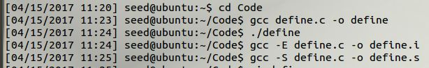可以看到预处理后的内容，已经宏定义的使用根本不是普通函数调用过程。
 |
 |
 |
如果刚才上图中的没有说服力，下图中则是完全仿switch_to写的，可见依然不是函数调用。
 |
 |
 |